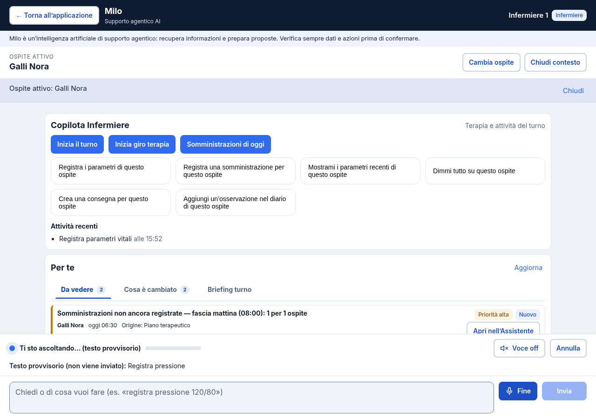
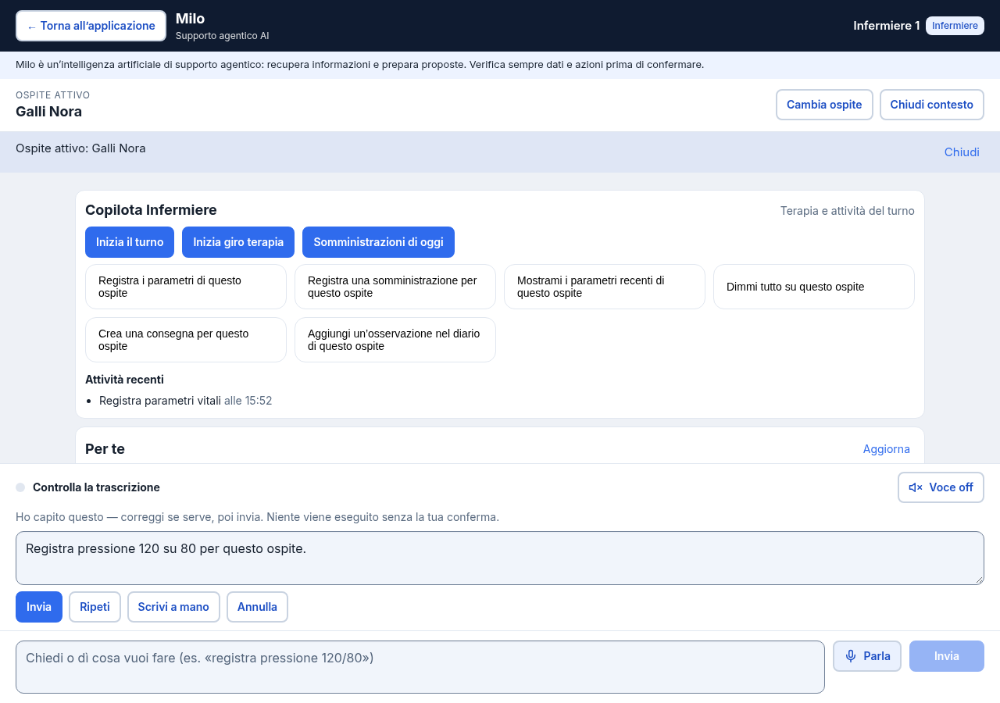
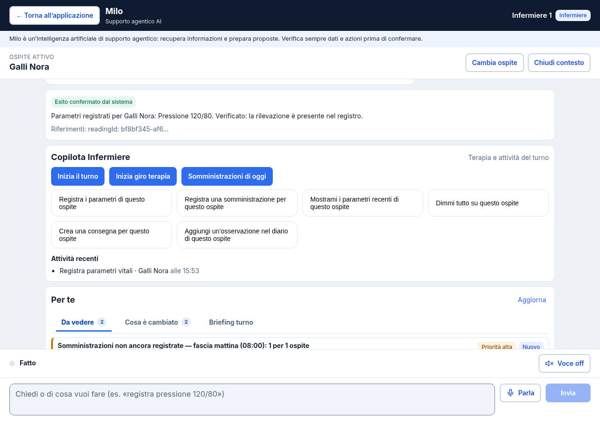
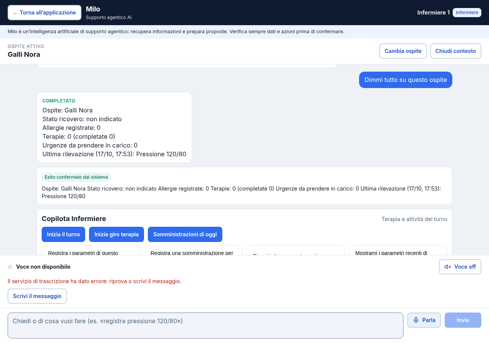
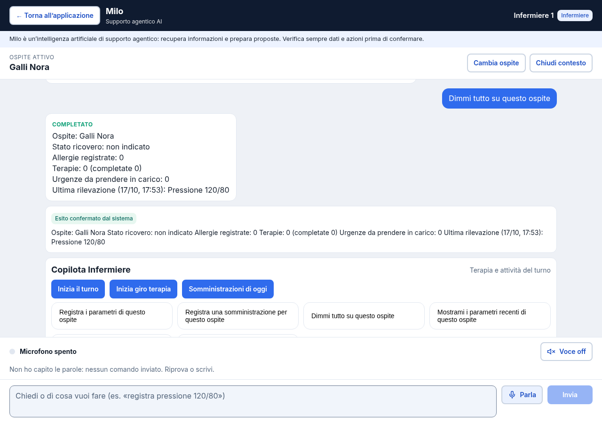
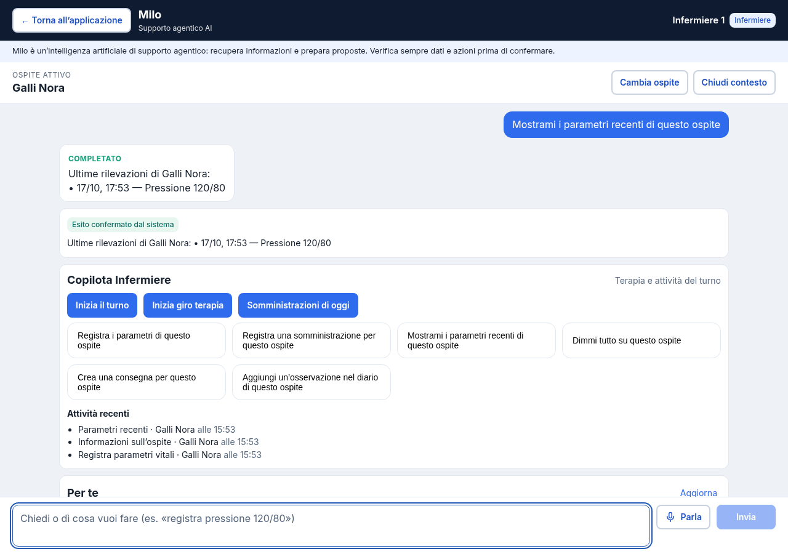

Independent QA2 — actual Playwright API execution 52 actual browser assertions PASS. Real ClinicOS app, microphone/VAD, backend and owned isolated PostgreSQL16. Scripted WebRTC/provider transcript is synthetic. This is a generated artifact report for Playwright API execution, not a native Playwright Test-runner report. Positive Azure/provider transcription NOT RUN; no deployment/release claim.
Machine result + cleanup · Trace · Full video
partial exact visible value — PASS partial has no submission control — PASS partial triggers no assistant request — PASS independent FINAL while listening remains display-only without transcript/send — PASS final transcript exact value — PASS independent adversarial FINAL injected before actual commit and rejected — PASS one negotiation and no file/provider fallback — PASS one local end-of-turn commit — PASS final releases microphone tracks — PASS final alone performs no clinical write — PASS final submission enters existing policy preview — PASS preview persists no clinical write — PASS explicit UI confirmation completes — PASS exactly one persisted reading — PASS persisted values retain literal blood pressure — PASS cancel partial closes microphone and peer — PASS cancel never submits or uploads — PASS independent stale partial/final/error after cancel ignored — PASS late permission stream stopped after cancellation — PASS permission denied offers text fallback — PASS provider failure releases tracks without silent file fallback — PASS text Assistant works after realtime failure — PASS only explicit confirmation changed clinical database — PASS early input_audio_buffer_commit_empty in LISTENING leaves recoverable ERROR and closed peer — PASS early input_audio_buffer_commit_empty in LISTENING exposes retry and text fallback — PASS early input_audio_buffer_commit_empty in LISTENING never submits, uploads or writes — PASS early input_audio_buffer_commit_buffer_too_small in LISTENING leaves recoverable ERROR and closed peer — PASS early input_audio_buffer_commit_buffer_too_small in LISTENING exposes retry and text fallback — PASS early input_audio_buffer_commit_buffer_too_small in LISTENING never submits, uploads or writes — PASS early input_audio_buffer_commit_empty in TRANSCRIPT_PARTIAL leaves recoverable ERROR and closed peer — PASS early input_audio_buffer_commit_empty in TRANSCRIPT_PARTIAL exposes retry and text fallback — PASS early input_audio_buffer_commit_empty in TRANSCRIPT_PARTIAL never submits, uploads or writes — PASS early input_audio_buffer_commit_buffer_too_small in TRANSCRIPT_PARTIAL leaves recoverable ERROR and closed peer — PASS early input_audio_buffer_commit_buffer_too_small in TRANSCRIPT_PARTIAL exposes retry and text fallback — PASS early input_audio_buffer_commit_buffer_too_small in TRANSCRIPT_PARTIAL never submits, uploads or writes — PASS empty buffer after actual commit recovers to IDLE without an invented transcript — PASS empty committed turn has no submit control or clinical write — PASS new capture works after early and committed buffer errors — PASS disconnect releases mic and shows safe fallback — PASS old AudioContext rejection cannot cancel a newer pending microphone capture — PASS resident change discards partial and closes peer — PASS resident change never submits stale transcript — PASS independent stale partial/final/error after resident change ignored — PASS hidden tab cancels pending permission and stops late stream — PASS unmount releases late permission stream without background capture — PASS lifecycle interruptions never write or upload — PASS all provider sessions closed — PASS after reload authorized readback completes — PASS after reload visible persisted blood pressure is exact — PASS reload/readback creates no second clinical write — PASS no page or console errors — PASS no unexpected HTTP errors — PASS 
01-partial-display-only.png 
02b-independent-early-final-rejected.png 
04-confirmed-one-write.png 
13-early-listening-input_audio_buffer_commit_empty.png 13-early-transcript_partial-input_audio_buffer_commit_buffer_too_small.png 
14-empty-committed-idle.png 
12-reload-persisted-readback.png